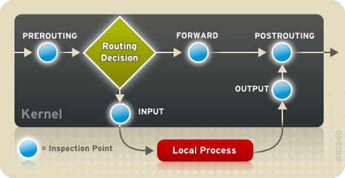

Mariox definicije su ti okej, al ne razumijem zašto bi pod 10.a) bilo FORWARD? Paketi su namjenjeni točno tom poslužitelju na kojem konfiguraš firewall, tako da mi INPUT ima smisla, 10.a) sam čak i testirao u imunesu.
10.d) razumijem zašto biš stavio FORWARD, čini se da zadatak nije dovoljno bio specifičan, odnosno misli li se da treba blokirati spoofanje lokalne adrese samo za WEB poslužitelj ili za cijelu lokalnu mrežu ili oboje.

INPUT bi blokirao spoofanje za WEB, FORWARD za ostatak mreže. Mislim da bi ta dva pravila bila okej.
iptables -A INPUT -i eth0 -s 10.0.1.0/24 -j DROP
iptables -A FORWARD -i eth0 -s 10.0.1.0/24 -j DROP
*** Ja sam gledao samo osnovne sigurnosne zahtjeve, ali moglo bi. Autentičnost su oni definirali ovako:
potvrda identiteta korisnika; ovjera vjerodostojnosti (autentifikacija) sudionika komunikacije; ovjera izvora podataka
http/https ima način za auth preko HTTP authentication, tako da ona može biti zadovoljena, al to često ne ide preko HTTP authentication već preko običnog logina i kolačića. Primjer tog ti je ako ovaj link probaš otvoriti u incognito prozoru.
Zato što su je osoba prije tebe (ovdje je to osoba koja je radila zadatak) stavila sljedeću konfiguraciju:
:INPUT DROP [0:0]
:OUTPUT DROP [0:0]
:FORWARD DROP [0:0]
[...]
-A INPUT -m state --state RELATED,ESTABLISHED -j ACCEPT
-A OUTPUT -m state --state RELATED,ESTABLISHED -j ACCEPT
-A FORWARD -m state --state RELATED,ESTABLISHED -j ACCEPT
Ova prva tri reda ti kažu: sve što ne odgovara nekom pravilu ispod, dropaj. Ova 3 reda dole ti govore da svaka veza koja je upostavljena može nastaviti komunicirati i neće biti filtrirana od strane prva 3 pravila (i ostalih koji se nalaze ispod). Tako da je nekako logično staviti samo pakete koji imaju state NEW.
𝐓𝐇𝐄 𝐒𝐄𝐂𝐑𝐄𝐓 - 𝐂𝐋𝐔𝐁 da nema ove linije “-A INPUT -m state –state RELATED,ESTABLISHED -j ACCEPT” jel bi onda trebali dodavati to ili ne ?
Mislim da ne bi. Koliko ja razumijem oni su to stavili zbog ‘jednostavnosti’:
By making the firewall statefull and the first rule the typical -A INPUT -m state –state RELATED,ESTABLISHED -j ACCEPT the vast majority of legitimate traffic to your server is accepted after passing only that single rule. That traffic doesn’t need to traverse any other rules.